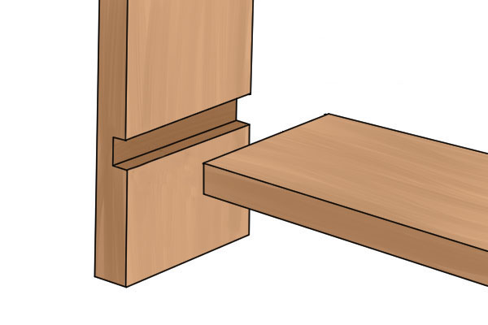

Joinery
Chances are, most projects you'll be making will require multiple boards to be joined together somehow. Depending on the situation and the tools available to you, you have a decision to make on which joinery technique(s) you want to use. Here, we'll walk through some of the more common types.
Nails
You've probably heard of nails quite often. It is a very simple and basic way of joining to pieces of wood together. You simply take a nail and hammer it through one board into another. A general rule of thumb is to use a nail that is 2 1/2 times the thickness of the wood you are nailing through. Intuitively, make sure you nail perpendicularly to the material to ensure it goes in straight.
While this option does indeed work, it isn't necessarily the strongest there is. But, for quick and dirty projects, this will work fine.
Screws
Screws are similar to nails except we don't use a hammer. For screws, we want to use either a screw driver or a drill. Before driving the screw into the wood, it is good practice to drill a pilot hole slightly thinner than the screw into the wood. This prevents the wood from splitting from the impact of the screw. Unlike nails, you want to the screw to be at least half the thickness of the bottom material you are screwing into. This will give you the best connection between the two materials.
Screws are much stronger than nails and in most situations, there is no real reason to choose a nail over a screw. Nails only perform better if the fastener will need to handle side-to-side force.
Glue
You may be surprised by how strong wood glue can be. You may be inclined to think it's only going to hold temporarily or won't provide a strong bond. On the contrary, it is actually more likely that if the two boards were to separate, it would be from breaking a board before the bond from the glue breaks. In all of the following joinery techniques, glue will be used as well to strengten the joints.
Dado
Dados are the first technique shown that isn't directly securing the boards together. This joint, when done accurately, creates a channel in one board where a second board can securely sit in. This is of course strengthened with glue, but the joint itself is rather strong on its own. Below is a picture demonstrating it:
Dado joints and other complex joints like Dovetails require more precise tools than the previous options. If you have little experience with different saws or chisels, it may be best to stick with nails, screws, and glue.